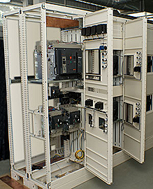

Сучасна система електропостачання являє собою складний комплекс технічних засобів, призначених для забезпечення споживачів електричною енергією, який має в своєму складі елементи обліку електроенергії (щит обліку), ввідно-розподільний пристрій, що дозволяє забезпечити рівномірний розподіл електроенергії по споживачах і захист людей, з'єднувальних ліній, кінцевих пристроїв і споживачів
В електропостачанні будівель і споруд немає дрібниць, важливий кожен етап: розрахунок, монтаж, випробування. Помилки на будь-який з стадій виконання робіт з електропостачання ведуть до незапланованих витрат, зниження якості енергії, недостатню надійність мереж і так далі. Велике значення має правильний вибір типу кабелів і проводів, що застосовуються для прокладки сполучних ліній, їх перетин. Підсумки неграмотно проведених робіт з електропостачання бувають плачевні: в кращому випадку спрацює запобіжник, і електропостачання перерветься, в гіршому - це може загрожувати загорянням, виходом з ладу дорогого електроустаткування і так далі. Тому не варто економити там, де це може обернутися збитками. Тому рекомендуємо звернутися до послуг нашої компанії, яка зарекомендувала себе як надійний постачальник комплексних рішень по електропостачанню.
ТОВ «Спецкомплекс» здійснює повний комплекс робіт з електропостачання, основні з яких це: